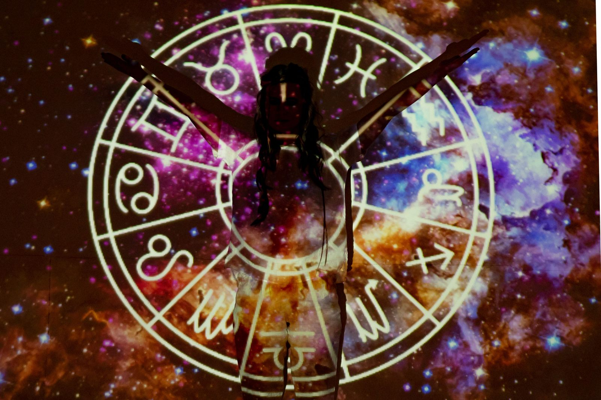

Ask a group of friends what their “sign” is, and almost everyone will give you an immediate answer based on their birthday. But ask them what system of astrology they are using, and you will likely be met with blank stares.
Astrology is a diverse collection of ancient traditions that developed in completely different parts of the world. Each system uses distinct mathematics, different starting points, and occasionally widely different conclusions about the exact same birth date.
If you have ever been baffled as to why a Western horoscope calls you a fiery Leo while a Vedic astrologer insists you are a sensitive Cancer, it’s not a mistake, it’s just a difference in framework. Here is a clear breakdown of the three major types of astrology practiced today and what makes each one tick.
Western Astrology: The Psychological Lens
If you have ever read your daily horoscope or looked up your zodiac sign (find out what that means here) online, you are already familiar with Western astrology.
This system uses the tropical zodiac, which means it is anchored to the Earth’s seasons rather than the physical placement of the constellations in deep space. The astrological year begins at the spring equinox, dividing the sky into twelve equal 30-degree slices.
What it does best: Western astrology is deeply psychological. It thrives on answering questions like “Who am I?” and “How do I behave?” It is the go-to system for personality mapping, discovering character traits, and calculating relationship compatibility.
Vedic Astrology: The Map of Destiny
Vedic astrology, historically known as Jyotish, traces its roots back thousands of years to ancient Indian scripture. Unlike its Western counterpart, Vedic astrology uses the sidereal system. This means calculations are based on the actual, current positions of the constellations in the sky.
Because the Earth slowly wobbles on its axis over millennia (a process known as precession), the tropical and sidereal systems have drifted apart by about 23 to 24 degrees. This shift is exactly why your sign might change when a Vedic astrologer reads your chart.
What it does best: Where Western astrology focuses on psychology, Vedic astrology focuses on karma, destiny, and timing. It utilizes intricate planetary periods called Dashas to predict specific life events and focuses heavily on how to navigate the life path you were dealt.
Chinese Astrology: The Element Cycle
Chinese astrology completely abandons the familiar wheel of the zodiac. Instead, it operates on a sophisticated, multi-layered calendar rooted in the year of your birth.
The foundation is a twelve-year cycle, with each year ruled by a different animal (Rat, Ox, Tiger, Rabbit, Dragon, Snake, Horse, Goat, Monkey, Rooster, Dog and Pig). But it goes deeper: these animals are combined with five elements (Wood, Fire, Earth, Metal and Water). Together, they create a 60-year pattern. This means a “Water Dragon” and a “Fire Dragon” will possess very different energies, despite sharing the same animal sign.
What it does best: Chinese astrology asks “What larger cyclical pattern were you born into?” It excels at examining generational traits, natural temperaments, and exploring the Yin and Yang balance within a person’s life.
Which One Should You Use?
There are no rules saying you have to pick just one. In fact, many people consult different systems depending on what they are currently trying to navigate:
- Need quick insights into your personality or a new romantic interest? Western astrology is your best bet.
- Looking for highly structured, long-term predictions about your career or major life events? Look into Vedic astrology.
- Curious about your broader temperament or the cultural energy of the year you were born? Chinese astrology offers a rich, totally different perspective.
Ultimately, they are all distinct, beautiful maps of the exact same sky, drawn by different cultures, from different starting points, centuries apart.